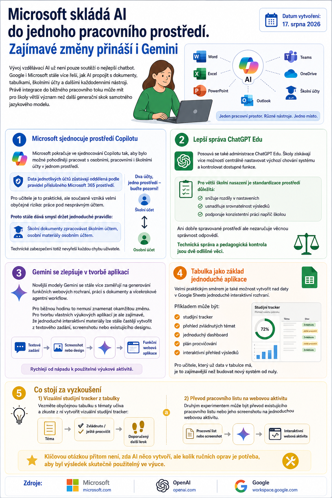

Vývoj vzdělávací AI už není pouze soutěží o nejlepší chatbot. Google i Microsoft stále více řeší, jak AI propojit s dokumenty, tabulkami, školními účty a dalšími každodenními nástroji.

Právě integrace do běžného pracovního toku může mít pro školy větší význam než další generační skok samotného jazykového modelu.
Microsoft sjednocuje prostředí Copilotu
Microsoft pokračuje ve sjednocování Copilotu tak, aby bylo možné pohodlněji pracovat s osobními, pracovními i školními účty v jednom prostředí.
Důležitým bezpečnostním bodem je, že data jednotlivých účtů zůstávají oddělená podle pravidel příslušného Microsoft 365 prostředí.
Pro učitele je to praktické, ale současně vzniká velmi obyčejné riziko: práce pod nesprávným účtem.
Proto stále dává smysl držet jednoduché pravidlo:
Školní dokumenty zpracovávat školním účtem, osobní materiály osobním účtem.
Technické zabezpečení totiž nevyřeší každou chybu uživatele.
Lepší správa ChatGPT Edu
Posouvá se také administrace ChatGPT Edu. Školy získávají více možností centrálně nastavovat výchozí chování systému a kontrolovat dostupné funkce.
Pro individuálního uživatele to nemusí být zásadní změna. Pro větší školní nasazení je ale standardizace prostředí důležitá.
Umožňuje totiž snížit situaci, kdy každý student nebo pedagog pracuje s jiným nastavením a výsledky se obtížně porovnávají.
Ani dobře spravované prostředí ale nezaručuje věcnou správnost odpovědí. Technická správa a pedagogická kontrola jsou dvě odlišné věci.
Gemini se zlepšuje v tvorbě aplikací
Novější modely Gemini se stále více zaměřují také na generování funkčních webových rozhraní, práci s dokumenty a vícekrokové agentní workflow.
Pro běžnou hodinu to nemusí znamenat okamžitou změnu.
Pro tvorbu vlastních výukových aplikací je ale zajímavé, že jednoduché interaktivní materiály lze stále častěji vytvořit z textového zadání, screenshotu nebo existujícího designu.
Tabulka jako základ jednoduché aplikace
Velmi praktickým směrem je také možnost vytvořit nad daty v Google Sheets jednoduché interaktivní rozhraní.
Příkladem může být:
- studijní tracker,
- přehled zvládnutých témat,
- jednoduchý dashboard,
- plán procvičování,
- interaktivní přehled výsledků.
Pro učitele, který už data v tabulce má, je to zajímavější než budovat nový systém od nuly.
Co stojí za vyzkoušení
Vezměte obyčejnou tabulku s tématy učiva a zkuste z ní vytvořit vizuální studijní tracker:
téma → zvládnuto / ještě procvičit → doporučený další krok.
Druhým experimentem může být převod existujícího pracovního listu nebo jeho screenshotu na jednoduchou webovou aktivitu.
Klíčovou otázkou přitom není, zda AI něco vytvoří, ale kolik ručních oprav je potřeba, aby byl výsledek skutečně použitelný ve výuce.
Zdroje
Microsoft · OpenAI · Google.